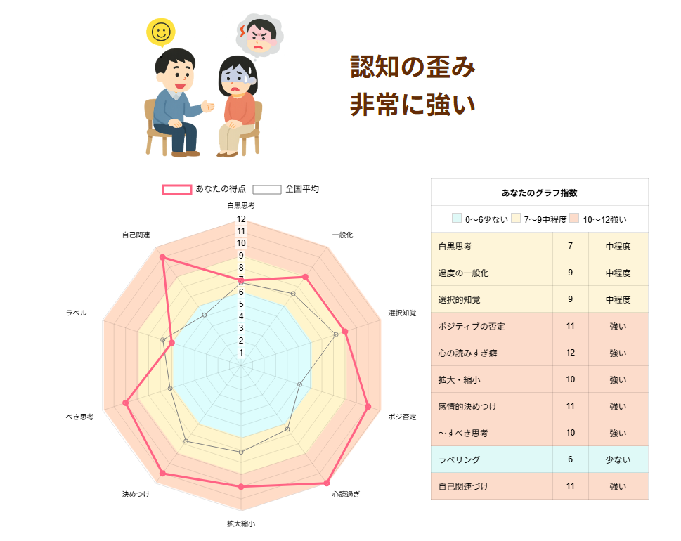
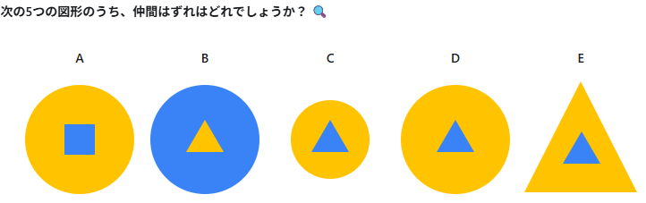

←2026年第三期 2027年第一期→
インフルエンザワクチンを接種しました。これで少し安心。
まだなかなか肩が良くならない。
メガドンキで買った「麻辣香鍋」を食べました。食べたことはないけど、干鍋というのに近いのではないかと思います。美味しかったです。

肩がこのごろまたあまり良くない。少しずつ治していかなくては……。
らをまとめる動画があった。
何かこう、完全列とかイデアルとかあの辺の話で統一的に説明できたりするものなのだろうか？
2026年10月11日 仏スーパーの冷蔵庫にサイバー攻撃、設定温度が上昇 数億円相当の食品を廃棄か
フランスでこのほど、スーパーマーケット数百店舗がサイバー攻撃を受け、冷蔵・冷凍設備の設定温度が上昇する被害を受けた。数百万ユーロ（数億円）相当の生鮮食品や冷凍食品が傷み、廃棄されたという。
被害を受けたスーパーマーケット・チェーンによると、ハッカーは冷蔵・冷凍設備の温度を制御するソフトウエアを乗っ取り、一部の設備の設定温度を夜間に50度まで上昇させた。
スーパーマーケット・チェーン「コオペラティヴU」の最高経営責任者は、複数の店舗が「極めて深刻で前例のない」サイバー攻撃を受けたと明らかにした。 - BBC
2026年10月16日 気象庁「緊急地震速報」で誤報…約8分後に取り消し
北海道から中部地方にかけて広い範囲を対象に緊急地震速報（警報）が発表されました。千島列島を震源とするマグニチュード（M）9.9の巨大地震が発生したと推定し、最大震度7の揺れを予測したものです。
しかし、実際に発生したのはロシア・カムチャツカ半島付近を震源とするM6.9の地震で、国内で観測された最大震度は北海道函館市の震度1でした。気象庁は12時48分に緊急地震速報を取り消し、後に過大予測の原因を公表し緊急対策を行いました。緊急地震速報（警報）の取り消しは初めての事例になります。 - 日テレNEWS
2026年10月26日 OpenAI、数学・計算機科学・物理学の難問でAIの新たな研究成果を発表
OpenAIは2026年10月26日（現地時間）、内部のAIモデルが数学・コンピューターサイエンス・物理学の3分野で新たな研究成果を生み出したと発表した。対象は調和解析、計算複雑性理論、場の量子論に関する難問である。
同社はAIが生成した原稿を「研究の生データ」と位置づけ、研究者が内容を理解し、検証・発展させるための体制も示した。数学と計算機科学の資料は公開する一方、物理学の資料は外部研究者グループの判断で公開を見送っている。 - ledge.ai
2026年10月28日 PHP2Shellで各ページが停止
PHP2Shell（ピーエイチピー・ツー・シェル）は、プログラミング言語PHPの内部に存在する、2026年10月に公表された、2件の重大な脆弱性の総称である。共通脆弱性識別子（CVE）ではCVE-2026-109618およびCVE-2026-109619として知られ、特定の条件下で認証を受けていない攻撃者による遠隔コード実行（RCE）を可能にする。いずれも共通脆弱性評価システム（CVSS）バージョン4.0において深刻度9.2と評価された。
その存在は2026年10月20日に公表され、翌21日には緊急パッチと脆弱性の詳細が公開された。 - Wikipedia
く……ではなく、寒くなってきましたね。
Codexばっかり触っていました。今日は少し仕事したら祖母に会いに行って来ようかな。
「X-Clash」というアプリの広告のゲーム（『警官と泥棒ゲーム』という名前がついているらしい）をやってみたかったのですが、実際のゲームが思ったものとちょっと違っており、ムムッ、となったので作りました。
0040 Ariadne -- graph escape泥棒側の方が遊んでみたかったので、そういうやつ……と思ってるうちに、あまり似てないものになりました。序盤・中盤は運の要素が強いですが、戦略さえ掴んでしまえばだいぶ長く遊べると思います。操作は若干面倒くさい寄りです（ｗ
音楽は自作のものをSunoAIに取り込んでいわゆる『ダンジョンシンセ』風に作ってもらってみました。結構心地よかったので、サウンドテストも付けてみました。時々作曲もしたくなりますね。5平均律の曲をSunoに投げたらやはり12平均律になったので、そろそろMelodyneとか試したいかも。
あと、効果音は作りました。Adobe Firefly、DominoでMIDI打ち、0013 Spectro Sampler でちょっとヘンな音を足したりReaperで少しいじったり。
音楽はMusicページ、効果音はMaterialページに後でアップします。
あまり調子が良くなかった。どうも、月一で精神的に悪くなる周期があるっぽいのではないかという気がしてきている。
あと、片頭痛の薬が切れてしまったり、マウスのホイールがヘタって来たり。色々またメンテナンスをしなくては……。片頭痛はだいたい45日、マウスはだいたい半年から1年くらいなのかな、という感じ？
と言いつつ、色々やってはいる。色々……。昨日のものはttfを出せるようにして、元々ttfで触るようにしてみた。普段の日記と環境を合わせて操作できるので、これだけでも結構嬉しい気がする。
だんだん寒くなってきた。無理しないようにしないと、また風邪を引いてしまう。
線形代数を少しやる。
起きてからしばらく、あまり気分が優れなくてイライラしていた。肩の調子は少しずつよくなってきていて、だいぶ上がるようにはなってきているのだが、まだ痛みがある。
某動画のショーペンハウアー回を見て、解釈違い（←書いておいてなんだが嫌いな言葉だなあ！ｗ）を起こしてますます気分が悪くなってしまった。 森の中を眺めるだけでも「生命や宇宙ってなんかめちゃくちゃ呪われてない？」というような気分に自分はなるのだが、意外とみんなならないらしい。 まあこの辺の感覚は本当に人それぞれだろうから、自分みたいなのは大人しくこういうところに引っ込んでいるに越したことはないのかも……。
とかみたいな不思議な字を出せるように、と思って 0039 choiwaru kanji というものをCodexさんに作っていただきました。svg表示もできる……と言いつつも、フォント作りは前も失敗したのであまり自信ないかも……ｗ

Dが仲間外れなのだけど、これは行列で表すことが出来そうで、多数派から推定・復元可能な元型からの距離を見た時にDだけ0だよね、という意味では実は行列で見られそうだね、という話を少ししていた。それはいいアイデアらしくて、
$$M= \begin{array}{c|cccc} & \text{内形}&\text{配色}&\text{大きさ}&\text{外形}\\ \hline A&1&0&0&0\\ B&0&1&0&0\\
C&0&0&1&0\\ D&0&0&0&0\\ E&0&0&0&1 \end{array}$$
D行を消してしまって、
$$M'= \begin{pmatrix} 1&0&0&0\\ 0&1&0&0\\
0&0&1&0\\ 0&0&0&1 \end{pmatrix} =I_4$$
とすると \(\mathbb{F}_2\)
係数の単位行列になる。Dはほかの4つすべてにハミング距離1で接している。ではハミング距離2の図形4つから一意に再建できるのだろうか、という疑問が湧いた。
$$M_1=\begin{pmatrix} 1&1&0&0\\
1&0&1&0\\ 0&1&0&1\\ 0&0&1&1
\end{pmatrix}$$
これは不可能らしい。各行が重み2なら、全体の1の数は8になる。4列のうち全列で2対2の同数を避けるように配置することは出来ない。4次元において重み2の点は全6種あり、互いに補集合となる3組に分かれるが、そこから4点を選ぶとなると少なくとも1組の補集合ペアを含む。そのペアでは各列1対1なので、残る2点によって全列の多数派を一意にするにはその2点が全成分で一致しなければならず、異なる点という条件に反する。そのため、ハミング中央点は一意に定まらない。なるほどなあ……。
なんだか、誤り訂正っぽい雰囲気のにおいがする……？ 要するに、1ビットだけ反転していると、元通りの情報を取り戻せるということなのではないか？ そういえば、ブラックホールのホログラフィックとかAMEがどうとか言う話とちょっと似ているのかも？
という意味で、問題の答えは「Dはブラックホールだったので仲間外れ」……ということにしよう（本当にどういうこと？ｗ）（そのアナロジーで言うならブラックホールなのは問題そのものなのでは……）
そもそもなんでこんなにあちこちに線形代数が現れるのか、ということについては、「非線形な運動でも局所的に線形と見做せる（微分）」、および「任意の有限集合からは自由ベクトル空間を構成できて（左随伴）、形式的な線型結合を作れて、テンソル積とか双対とか固有値分解・直和分解のような強力な道具が使えて便利」という話なんじゃないですか、ということを言われた。圏論のことはまだ全然わかっていないけど、それはなんだかすごく本質的な話なんじゃないかという気がする。
あらゆる現象の中に、局所的には自由ベクトル空間があると思える……ということになるのだろうか？
整形外科に行った。四十肩、というほどのことではなくなってきているらしい。そこまで拘着してないんじゃないの、ということのようなので、炎症止めを飲みつつストレッチしていくのがいいようだ。
肩が痛いせいであまり書く気になれずにいる。
「将棋は運ゲーか否か？」という話題が微妙にSNSで盛り上がっていたのだが、これは語用論の問題なのかもしれない……？
あくまで一ライトゲーマーの個人的感想に過ぎないのだけれども、「運ゲー」という言葉は「あるゲームに多くの時間を投資したプレイヤーが理不尽を経験した時に用いられることが多い」印象がある。
故に「運ゲー」は、実は単語ベクトルとかで見た時に「ガチる」「理不尽」とかとより近かったりするのではないか……みたいな（←調べなよ！ｗ）つまり、ある重みの上では「将棋は、桃鉄よりも断然運ゲーである」ということも全然ありうるのかも？
もちろん、「二人零和完全情報ゲームが運ゲーだとしたら、運ゲーじゃないゲームって何よ」というのは完全に数学的に正しい指摘だと思う。のだけど、「将棋で時間をかけて読んでいった方向が自分を有利にするかどうか」というのは確かに運『にも』左右されそうだなあ～とも思うし、逆に例えば格ゲーなんかは、反射神経とかでかなりカバーできる面があったりするんじゃ？ とも……。
まあこういうことをSNSで書いてもいいのだと思うけど、書く緊張感に対して見返りがあまり多くなさそうというか、どうにも定義奪取のために敵対しあう言語ゲームっぽくなっている感があったので、あまりSNSでは書く気になれなかった。
[000001] に対して整数倍を考えていくと、[001001] \(= -9/63 = -1/7\)
であるとか、[010101] \(= -21/63 = -1/3\) とかが出て来て、これが相補因子 [000111] \(=-7/63 = -1/9\)
や、[000011] \(= -3/63 = -1/12\) などと対になるみたい。#####
#aA.#
###.# // Aはaに、aはAに飛ぶ。
THE SAFARIがなぜ6thで高速化したのかは不明だが、BPM134→150は、\(1200\cdot \text{log}_2(150/134) = 195.28\ldots\text{c} \approx
200\text{c}\) で、ほぼ12平均律の全音である、という情報を得た。151/134 だと
206.78...cで、こちらの方が悪い。
……というか、もしかしてBPM150で作ったものを配慮で少し遅くしてあったまであるのではないか？（放言）
肩よりも鎖骨の方が痛い気がする。自然と庇ってしまっているのかも。
整形外科のお医者さんに診てもらいました。おそらく四十肩ではないか、とのこと。
だが、腱板などに問題がある可能性もあるので、一応紹介状を書いてもらって、来週水曜日にもうちょっと細かく見てもらうことに。
非常に痛みが強く、特に夜と朝などはもう、黙っていても痛い……。急性期はとにかく安静にし、揉まない、押さない、無理なストレッチもまだ避けるべき段階のようなので、これはもうじっとすることにする。良くなってきたら、今度は固まって可動範囲が狭くなることが多い（拘縮期：線維化して癒着する）そうなので、しっかり動かすようにする、とのことだそうで。デスクワーカーな上、実家の片づけもしてたからなあ……。
そういう感じで、あまり何も出来ていない……と言いつつ、実家の祖母が親戚と会えるようにはしてきた。むむむ、出来ればゴミ捨てとかもしたいのだが。
迷路アプリを作成中。
こういうのは（少なくとも自分は）だいぶ楽しいが、人にとってはどうなのだろう？
ただし残念ながら今は肩のせいで自分で遊ぶのが大変なので、自動アルゴリズムを組んでもらった。
今のところ、トーラス、ダブルトーラス、階層構造、アンダーパス、鍵と扉、ワープ床、触ると強制ワープさせられる敵（鳥人間）くらいまで出来てきている……言われたこととしては、「実はワープ床、ダブルトーラス用の穴、階層構造、アンダーパスは全部同じものかも」ということで、自分もその予感がしている。適切な座標変換で相互に移り合いそう、というか。ただしスケール（長さとか？）が大きく変わるのではないかと思っている。
うまくやれば、ワープ床付きの迷路なんかも1枚の迷路に綺麗に直せるものなのかもしれない。（結局は全部グラフ構造だよね、みたいな。一方通行のワープ床なら有向グラフになる）（となると体験としての違いは『遷移に応じて何が画面から消えて何が画面に残るか』とかなのではないかと思う）
\(* + * =0\) に対し、\(H+H = *\) となるような \(H\) は考えることが出来るらしく、実は短いゲームの加法群には任意の \(2^k\) 位数の元があるとか、どんなに短いゲーム \(G\) に対しても \(H+H=G\) を満たす短いゲーム \(H\) があるのだとか。
\(A=\{1\mid *\}\) というゲームを考えて、\(2A\) を考える。
① \(A + 1 = \{2, A \mid 1+*\} \xrightarrow{不利な選択肢を除去} \{2 \mid 1+*\}\)
② \(A + * = \{1+*, A \mid 0,A\}
\xrightarrow{不利な選択肢を除去} \{1+* \mid 0\}\)
③ \(A+A = \{A+1 \mid A+*\} = \{ \{ 2 \mid 1+* \} \mid \{1+* \mid 0
\}\}\)
つまり、 \(2A = 1+* = \{1\mid 1\}\) である。ここで移項して、\(H = A-1/2\) と置けば、\(2H = 2A-1 = (1+*)-1 = *\) 。すなわち、$$\boxed{\frac12 *\;\overset{\mathrm{def}}{=}\;\{1\mid *\}-\frac12}$$である。
\(\{1\mid *\} - \{0 \mid 1\}\)
\(=~\{1\mid *\} + \{-1 \mid 0\}\)
\(= \{1/2,~~\{1\mid *\}-1 \mid *-1/2,
\{1\mid *\}\}\)
計算間違いしていなければ、こういうことになるか。うーん、左手側は \(1/2\) を取りたいだろうし、右手側は \(*-1/2\) を取りたいだろうし……と思うと、実はスターそのものよりもちょっと加熱してるかもしれない。不思議な気もするが、なんとなくそういうこともあるのかもという気もする。
自分は異常なマップ移動をするゲームや創作を「やってるなあ……」と感じがちなのだけど、中でも好きなのは、
あるいはマヨイガとかも普通にそうなんだろうと思う。棄却された科学理論がゲームで再発掘されることがあると思っており（ミアズマ≒毒沼とか、外送説≒逆レイトレーシングとか、前成説≒キャラクターの成長曲線とか）、昔の人たちの空間認識は実はそんなにユークリッド的ではなかったのではないだろうか、みたいな。（みたいなことにラヴクラフトが気付いてたんじゃないか、とか想像するとちょっとわくわくしたりしますね）
ここでの「やってる」には4種類あるとChatGPTに言われた。
実装の層が少しだけ垣間見える、という意味で言うと「やってる枠」にハルヒや裏世界ピクニックが入るのは、実は4が少しそれなのかもしれない。OUT OF THIS DIMENSIONSは、いきなりエンディングが始まるというルール違反感がちょっと4っぽくもあるかも？（多分3Dデモ用のデバッグステージの名残とかなんじゃないかと思っている……ｗ）UndertaleのInaccessible Roomsは完全に4。
無事納骨が済みました。ここからは実家の片づけ。
右肩が終了してしまっている。もう十数年近く僧帽筋～棘上筋への違和感（尖って硬くなる感じ？）を抱えていたのだけど、とうとう肩が上がりづらくなったどころか、ずっと痛い状態になってしまった。連休明けはすぐ整形外科へ行こうかな……。
しばらくやっていないのだが、カレーを作りたい。紹介できるほどのものでもないけど忘れるのでメモる。
自分用に、たまにやるレシピをざっくりどこかにまとめてもいいかも。Aboutとかで……？（お気に入りの漫画コーナーとかも作ろうかしらと思っていた）
迷路システムと超現実数を続けている。\(\Phi(-1, 0) = 1/\epsilon_0\) でいいんじゃないかなーと思っていたけど、やはりそういうことで良さそうだ。
\(\omega^{\{0\mid 0\}}\) とか定まったりはしないのかしら。
\(\{0\mid\}\)
が左プレイヤーにとって1になって消費すると0、\(\{\mid0\}\)が右プレイヤーにとっては-1になって消費すると0になる。つまり、これは左プレイヤーにとっては \(\omega^1\) 、右プレイヤーにとっては
\(\omega^{-1}\)
であるべきなのでは？
基本的に二分木構造を保っているので、「ゲーム×ゲーム」まではダメとしても（確かノートン積というのがあったとは記憶しているけれど……）、こういう「超現実数×ゲーム」の積とか冪まではうまく行くとちょっとわくわくしますね。
あと、三人
\(\{a\mid b\mid c\}\) への拡張。なんとなく単体的集合とか出てくるのではないかと思っている（でもタイブレークが難しくなりそう）
以上修正。
GitHub
PagesとChatGPTの連携が始まっているので（NSFWイラストはgitignoreしてます）、ChatGPTからしばしば「お前のページ、ここおかしいぞー」とツッコミが入る。すみません……ｗ（元々書類仕事でも間違いが多いんだから、況やページ作りに於いてをや）
ライザのアトリエのサントラいいよね。
明日は少し実家のことをしなくてはならない。ひどく憂鬱だが、この辺の話の大方針がまとまりさえすれば、すべきことも決まってくると思う。
カントール展開というものについてのWebアプリ
を作りました。
n-進数というのがあるけれど、小数点以下の位ごとに別の基数を取ったっていいのではないのか、という話をChatGPTとしていたら教えてもらいました。今のところ、
という感じ。眺めているとどうもキュンと来るものがあり、
みたいな話をしていました。
トップ絵一枚追加。
松屋のメニューが激しくバグったのが面白かったので、バグ文字を作るためのJavaScript を作った。
バグっています。助けてください。ﾉｽｼｨﾉｽｼｨ
.jsを持って行けば誰でもページで使えます。Unicodeとかでも使えたら楽しいのですが……。
疲れてめちゃくちゃ眠ってしまった。
本来の仏教とは異なるだろうが、あらゆるものが心の働きによって仮に立ち現れているものならば、これを人工的に作ることは出来る（人形を作るようにして）のではないか。ただし常に起動するのは脳に重く、一方でいない瞬間に寂しさが伴う。ゆえに一部ソフト化するのはどうか……。
要するに「なんか食べたり勉強したり遊んだりしてたっぽい」という感じ。能力値とか書いた日記とか本とかあったらより楽しいのでは。LLMを本気で使えばマジで何か書かせてしまうことも出来ると思う（今はそこまで考えていないが）
-uḥ は -ur になる。-uḥ は -ur になる。ざっくり、連濁のようなものに近い。しっかりとしたルールブックがある。（要するに活用変化してからサンディで表面形が
病院に来ている。なんか歌とか聞こえるな。
特段話すべきことが思いつかなかったので、話だけして帰ってきた。
ある人の存在そのものを、「思想のレンズを通して見られた像」だけで見ないようにすること。
雑炊とか食べる。ハラスだとちょっと気持ち悪い。次は鮭フレークにしよう（最近高いんだよな……）
デーヴァナーガリーを少し眺める。
ṛ：母音（！）。反り舌のままそのまま声を出す。ḷ：母音（！）。bottleの最後のような感じ。ヒンディーにはない。c：チャ行子音。chとあったら有気音。v：ヴァ行子音。位置によってはワ行になることも。y：ヤ行子音。ṭ：子音。反り舌で「タ」。ḍ：子音。反り舌で「ダ」。ṇ：子音。反り舌で「ナ」。ṣ：子音。反り舌で「シャ」。ñ：ニャ行。「セニョール」「こんにゃく」ṃ：アヌスヴァーラ（純鼻音）。ざっくり「ン」。ḥ：ヴィサルガ。直前の母音を短く吐息でエコー。
aḥ でアハ、iḥでイヒ、uḥでウフ。ṅ：ウンガ。軟口蓋鼻音。要するに鼻濁音。ś：「シャ、シ、シュ、シェ、ショ」。こちらは日本語の「し」に近い。←2026年第三期 2027年第一期→